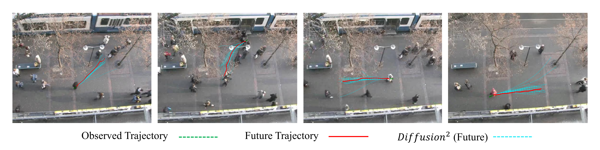
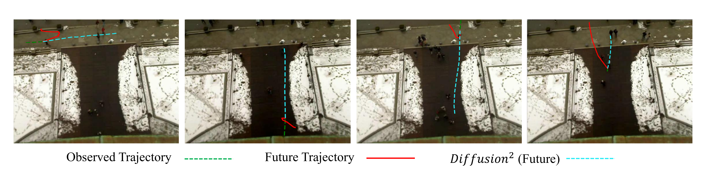

Accurate pedestrian trajectory prediction is crucial for ensuring safety and efficiency in autonomous systems and human-robot interaction scenarios.
Earlier studies primarily utilized sufficient observational data to predict future trajectories.
However, in many real-world scenarios, such as the sudden emergence of pedestrians from blind spots, obtaining sufficient observational data remains difficult,
making accurate prediction a persistent challenge and even contributing to traffic accidents.
Therefore, advancing research on pedestrian trajectory prediction under extreme scenarios is critical for enhancing traffic safety.
In this work, we propose a novel framework termed \( \textit{Diffusion}^2 \), tailored for momentary trajectory prediction.
\( \textit{Diffusion}^2 \) consists of two sequentially connected diffusion models: one for \( \textit{backward prediction} \), which generates unobserved historical trajectories,
and the other for \( \textit{forward prediction} \), which forecasts future trajectories.
Given that the generated unobserved historical trajectories may introduce additional noise,
we propose a dual-head parameterization mechanism to estimate their aleatoric uncertainty and design an adaptive noise module that dynamically modulates the noise scale in the forward diffusion process.
Empirically, \( \textit{Diffusion}^2 \) sets a new state-of-the-art in momentary trajectory prediction on ETH/UCY and Stanford Drone datasets.
Introduction
Three distinct frameworks are proposed to address momentary trajectory prediction.
(a) The model directly utilizes observable trajectories to predict future trajectories.
(b) The approach jointly predicts unobservable historical trajectories and future trajectories.
(c) Our proposed framework, \( \textit{Diffusion}^2 \), consists of two sequentially connected diffusion models: one dedicated to \( \textit{backward prediction} \), and the other to \( \textit{forward prediction} \).
Overall Architecture
The overview of our proposed \( \textit{Diffusion}^2 \):
(a) Framework: \( \textit{Diffusion}^2 \) consists of two sequentially connected diffusion models, \( {DDPM}_{past} \) and \( {DDPM}_{fut} \);
(b) Dual-head Parameterization Mechanism;
(c) Learnable Temporally Adaptive Noise Scheduling. Note that the red dashed line indicates the unobserved historical trajectory, with gray shading representing its uncertainty,
while the green and blue dashed lines denote the observed history and future trajectories, respectively.
Experiment Results
Comparisons of various approaches on multiple datasets. The evaluation results are reported as ADE/FDE (m). The best result is highlighted in bold, and the runner-up is underlined.
A visualization of the learned \( \lambda \) and \( l \) over diffusion step \( m \), where each \( l_m = \operatorname{sigmoid}(\gamma_{\varphi}(\mathbf{u}, m)) \).
Visualization of predicted unobservable historical and future trajectories on the ETH/UCY dataset.
The red lines represent the unobserved historical trajectories, while the cyan lines denote the observed historical trajectories.
The ground truth future trajectories are marked in light blue.
Predictions from \( \textit{Diffusion}^2 \) are visualized as blue dashed lines for future and orange dashed lines for history,
whereas the PCCSNet predictions are highlighted in magenta dashed lines.

Visualization of predicted pedestrian trajectories across several scenes in the HOTEL dataset.
Given the observed past (green, dashed), we show the ground-truth future (red, solid) and the model’s randomly sampled predictions (cyan, dashed).
Trajectories are sampled from \( \textit{Diffusion}^2 \) and rendered after de-normalization to the scene frame.

Visualization of predicted pedestrian trajectories across several scenes in ETH dataset (failure cases).
Given the observed past (green, dashed), We show the ground-truth future (red, solid) and the model’s best-of-20 predicted trajectory.
Trajectories are sampled from \( \textit{Diffusion}^2 \) and rendered after de-normalization to the scene frame.
Ablation study for our \( \textit{Diffusion}^2 \).